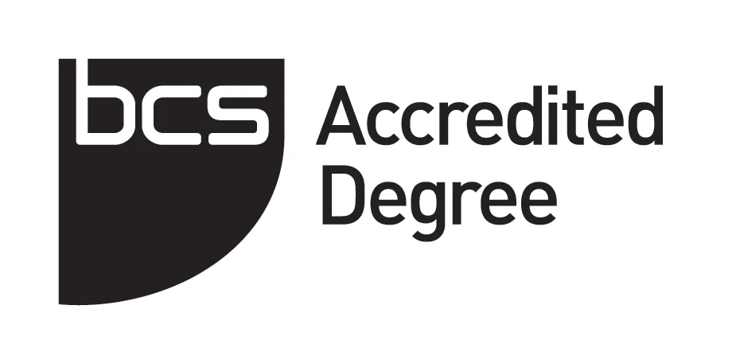
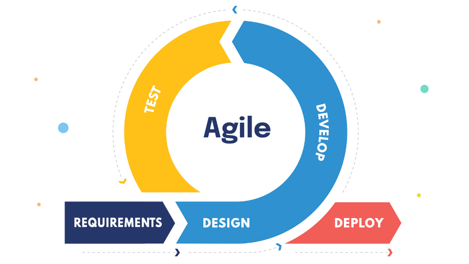
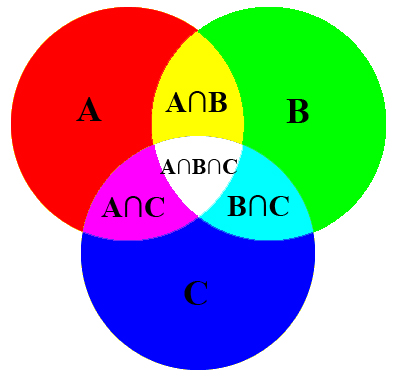
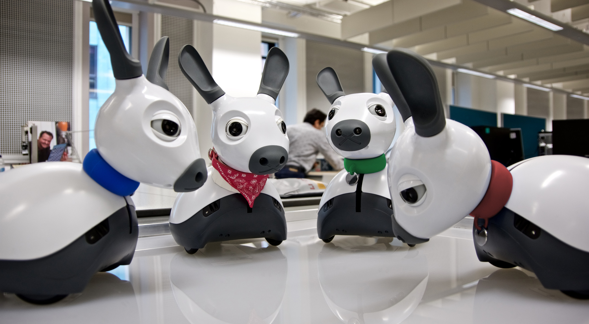
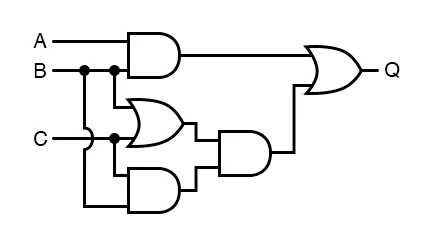
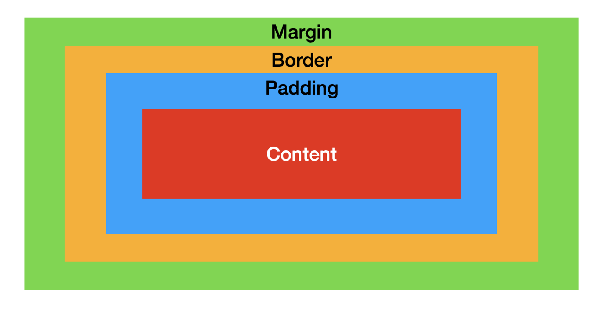
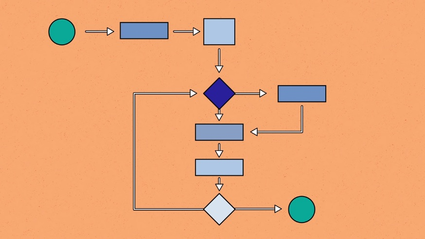

Overview
Computer Science BSc is a three year accredited degree with the possibility of a year in industry between the second and third years.
It provides skills that will be helpful in industry, such as finding solutions to problems, as well as making you familiar with all practical skills needed.
The first year is made up of 8 modules that will cover the basic principles needed in the rest of the degree.
Extra Information

Introduction to Software Engineering
This module covers the basic concepts needed to develop basic software that covers all requested requirements. It uses group work to allow the students to experience the practical side of software engineering.

Foundations Of Computer Science
This module provides all mathematical techniques and ideas necessary for the understanding of the mathematics behind the computer science seen in the first year of the course.

Java Programming
As the name suggests, this module covers the Java programming language from the basics , while encouraging well-written and readable programs. The module also introduces object-oriented programming.
Machines and Intelligence
This module covers the history and theory of Artificial Intelligence from its first concepts to modern day research. The practical side of the module covers the algorithms used in programming robots and AI.

Devices and Networks
This module starts by explaining the building blocks of a computer device such as digital logic and computer arithmetic. The module then moves on to covering networks and their protocols.

Web and Internet Technology
This module focuses on creating responsive, interactive websites using HTML, CSS and JavaScript. The module also covers accessibility issues, legal issues and security issues that may arise when creating websites.

Introduction to Algorithms and Data Structures
This module provides an understanding of algorithms, which one are of the most important aspects of computer science. Designing algorithms and analysing their efficiency is a big part of the module.

Global Engineering Challenge Week
The GECW is a project taken on in teams of 5 to 6 students of different courses. Each challenge falls under one of Water, Waste Management, Energy and Digital. It is designed to help with employable and transferable skills for the students.